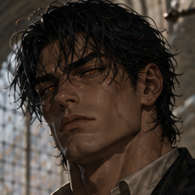
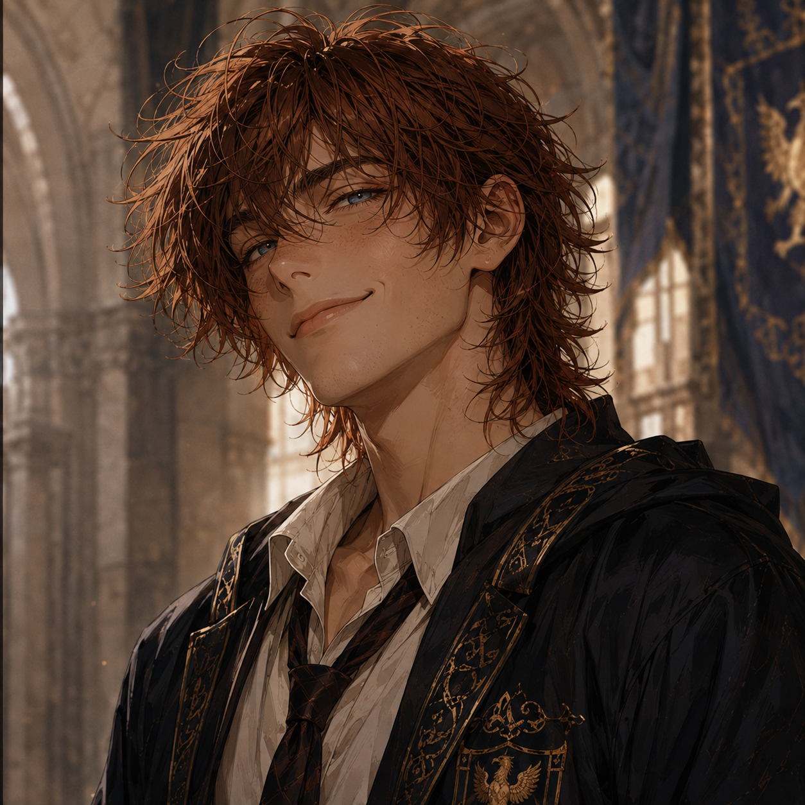
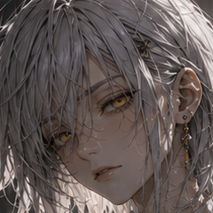
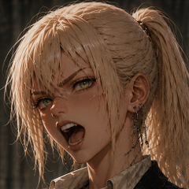

Academy Cadets

Darryn
Appearance: Male, tall, wide, pure muscle. Black hair, orange eyes.
Personality: Abrasive, quiet, strict, stoic.
Facet: "Hardening" (Turns skin into a jagged, unbreakable defensive/offensive material).
Bonded Dragon: Haƃruṿisḩ.

Scro
Appearance: Male, medium height, slender. Shaggy auburn hair, blue eyes.
Personality: Playful, rule-breaking comedic relief, but serious and lethal when jokes end.
Facet: "Duality" (Manipulates light for laser bursts/illumination, and shadows as solid weapons).
Bonded Dragon: Ŷohṿiłeh.

Airuei
Appearance: Female, petite, choppy silver hair, yellow eyes.
Personality: Shy, perpetually sleepy, avoids participation, but terrifyingly powerful when active.
Facet: "Joule" (Manipulates, shapes, and transfers kinetic/motion energy of physical objects).
Bonded Dragon: Heḯmøų.

Chrys
Appearance: Female, average height, platinum blonde hair, green eyes.
Personality: Loud, vulgar, boisterous, classic tsundere.
Facet: "Bleed" (Oozes blood through pores, hardening it instantly into solid weapons/shapes).
Bonded Dragon: Ƒogǎḩr.
Bonded Dragons
Haƃruṿisḩ
Appearance: Male, large, obsidian-colored, stone like scales.
Personality: Strategic, terse dragon with an unyeilding appreciation and demand for ancient dragon code, deep resentment for outbursts and unpredictability, and is always three steps ahead.
Bonded Human: Darryn.
Ŷohṿiłeh
Appearance: Female, average size, slate gray, flat rounded scales.
Personality: Jovial dragon who smothers loved ones with physical affection, is overly playful, feels genuinely bad by upsetting others, and values her bond over everything.
Bonded Human: Scro.
Heḯmøų
Appearance: Female, small, bright green, feather-like scales.
Personality: Scholarly dragon with intense curiosity, appreciation for those with high intellect, and is quietly arrogant of brutes and fools.
Bonded Human: Airuei.
Ƒogǎḩr
Appearance: Male, medium size, intimidating crimson, massive horns, sharp jutting scales.
Personality: Combative dragon with dominating presence, zero public vulnerability, and is a vocal bully using his deep vocals and snapping jaws.
Bonded Human: Chrys.
Ⱥhvỉęnøh
Appearance: Royal blue, average size. Large, bat-like wings featuring twin thumb claws, two vertically stacked mouths.
Bonded Human: User.